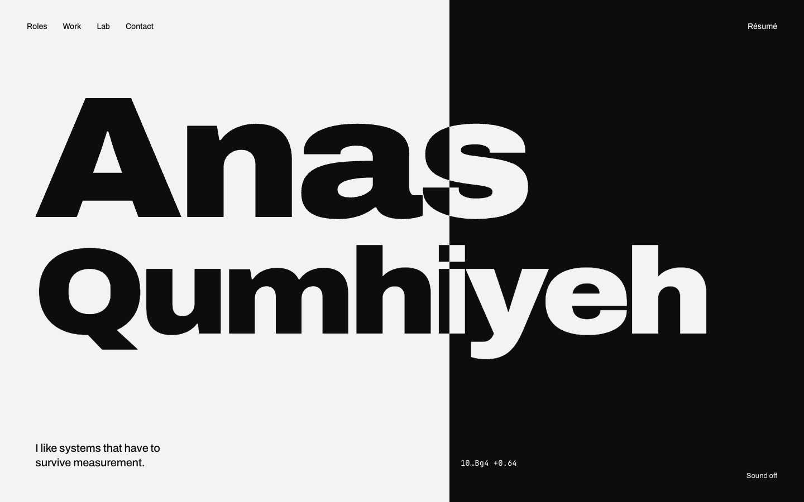
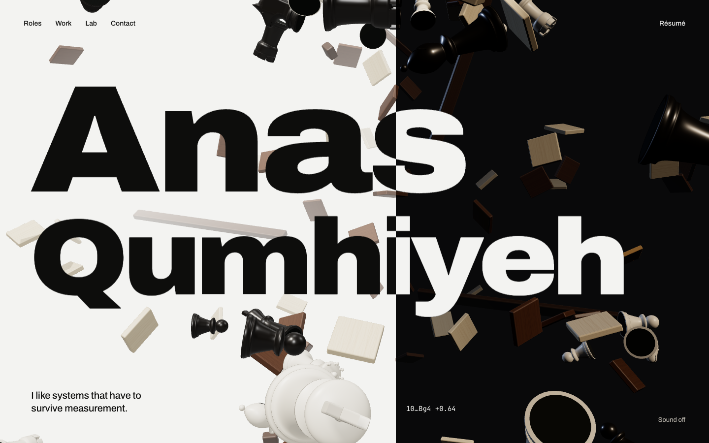
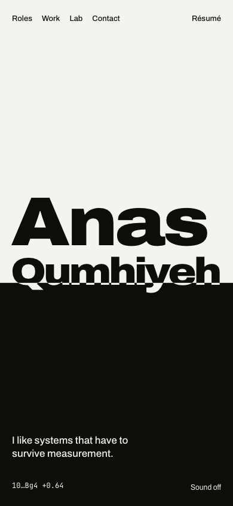
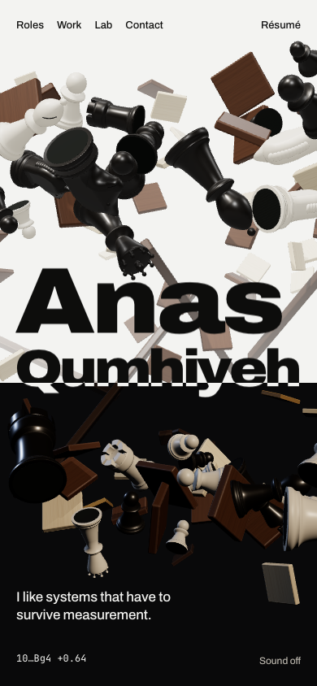

Phase 5, step 2. The exploding-board opening from design/motion/hero-3d.html, built into the site (src/components/hero/). Below: the approved key frame against the built end state, then the prototype and the build at the same instants, with the share of pixels that differ. All frames are captured frame by frame from the live pages at 1440×900 and 390×844.
| What | Prototype | Build | Why |
|---|---|---|---|
| type rendering | the full Archivo and JetBrains Mono files | the self-hosted woff2 subsets | Same fonts, same positions (every box matches to 0.01 px). Glyph edges rasterise about 1 px differently. This is almost all of the 0.7% after 5 s. |
| shadow maps | 4096 px | 2048 px | A quarter of the GPU memory; the shadows on the board are indistinguishable at both sizes (0.02-0.07% before the blast). |
| nav | text | real links to /roles, /work, /lab, /contact | The pages behind them come in step 4; until then they 404. |
| "Sound off" | working toggle | a static label | The toggle and the four cues arrive in step 5 with the loader polish. |
| quality stepping | none | new | From the brief (≥ 45 fps on a mid-range phone). If the opening runs under 45 fps, the resolution steps down 2 → 1.5 → 1. Below about 4 fps it skips to the end state instead of playing in slow motion. The idle bob stops on a still frame where a frame takes over 250 ms. |
| plays once | every load | once per session | As in design/motion.md: later visits in the same session, reduced motion, no WebGL and no JavaScript all show the end state at once. |

key frame, hero-a
build at 7.7 s
key frame, hero-a-m
build at 7.7 sDifference: the share of pixels where any channel differs by more than 40 of 255.
To see it at full speed, run npm run dev and open localhost:3000. It plays once per session: open a new tab, or clear session storage, to replay it.
| text clashes | None at 1440×900 and 390×844 across 9 instants, or at 1024×768 and 360×640 in the end state. |
| production build | No CSP errors; the hero hydrates under the nonce. Fast 4G: first paint 0.29 s; the opening starts at 1.2 s on a laptop and 2.3 s with the CPU slowed 4× (budget 2.5 s). JavaScript 316 KB. |
| frame rate | Mac GPU, both sizes: median 8 ms a frame, 95th percentile 16 ms. |
| tests | e2e/hero.spec.ts: the opening plays and rests on the seam; it plays once per session; reduced motion shows the end state and passes axe with one heading and one navigation; without JavaScript the name, line and links show. 54 unit tests, 9 e2e tests pass. |